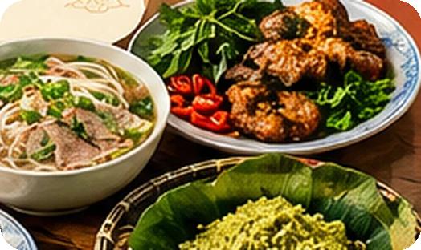
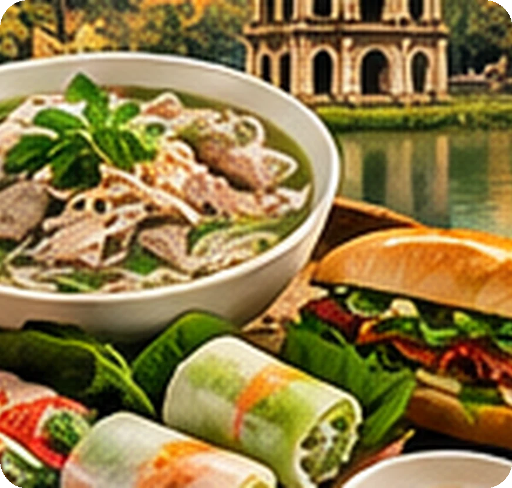
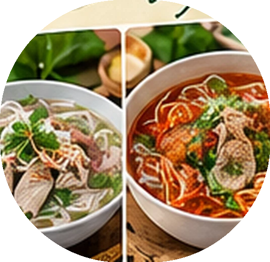
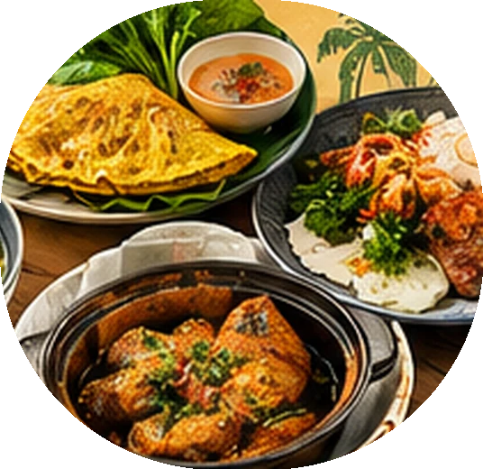
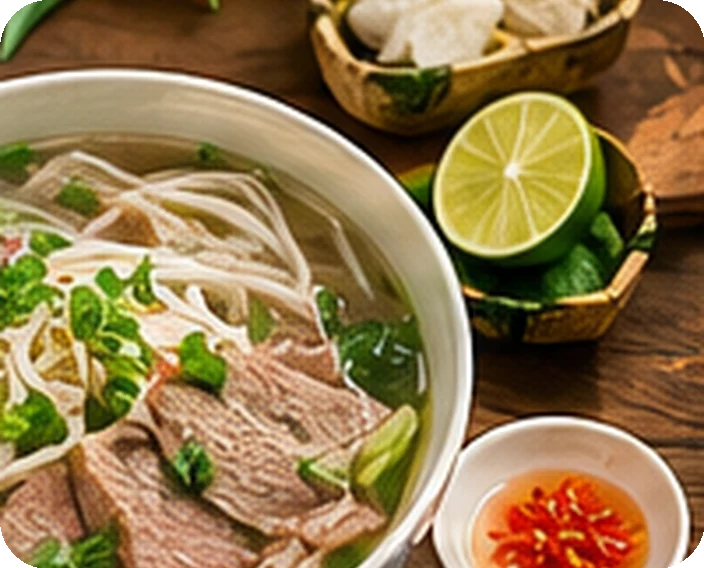
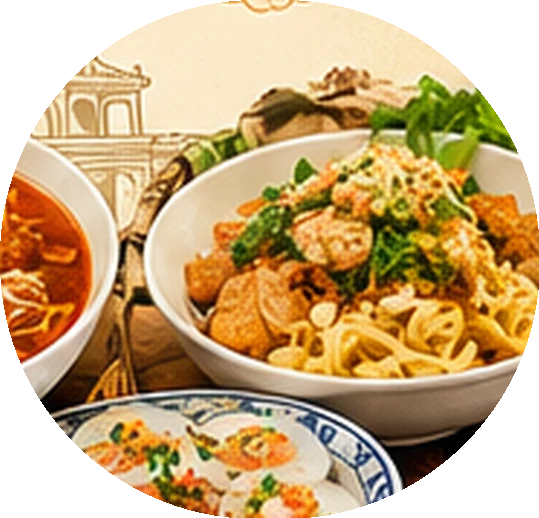
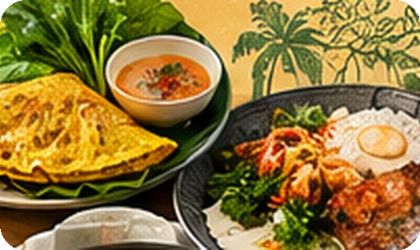
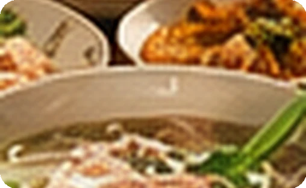

Miền Bắc
Vị tương đối thanh, hài hòa, chú trọng hương thơm tự nhiên. Tiêu biểu: phở, bún chả, bánh cuốn.
Xem món miền BắcHành trình khám phá văn hóa
Tinh hoa hương vị ba miền
Mỗi món ăn là một câu chuyện về con người, vùng đất, lịch sử và truyền thống.



Khái quát
Ẩm thực Việt Nam được hình thành từ điều kiện tự nhiên, văn hóa lúa nước và sự giao thoa giữa các vùng miền. Món ăn thường kết hợp nguyên liệu tươi, rau thơm, nước chấm và nhiều cách chế biến khác nhau.

Bản đồ hương vị
Khẩu vị, nguyên liệu và kỹ thuật chế biến tạo nên sự đa dạng, nhưng đều hướng đến sự hài hòa và tươi ngon.

Vị tương đối thanh, hài hòa, chú trọng hương thơm tự nhiên. Tiêu biểu: phở, bún chả, bánh cuốn.
Xem món miền Bắc
Nhiều món đậm đà, cay và trình bày tinh tế. Tiêu biểu: bún bò Huế, mì Quảng, cao lầu.
Xem món miền TrungNguyên liệu phong phú từ đồng bằng, vườn cây và sông nước. Tiêu biểu: bánh xèo, cơm tấm, cá kho.
Xem món miền NamHương vị đất Bắc
Nhiều món ăn đề cao vị thanh, không để gia vị lấn át nhau. Nước dùng, rau thơm và nước chấm thường được chuẩn bị tỉ mỉ.
Nước dùng thơm, bánh phở mềm, dùng cùng thịt bò hoặc thịt gà.
Thịt nướng ăn cùng bún, rau sống và nước mắm pha.
Lớp bánh gạo hấp mỏng, thường có nhân thịt và mộc nhĩ.
Thức quà từ nếp non, gắn với mùa thu Hà Nội.
Hương vị miền di sản
Khẩu vị thường rõ nét, có nhiều món cay và đậm đà. Ẩm thực Huế nổi tiếng với cách trình bày cầu kỳ, còn Hội An và Quảng Nam có nhiều món mang dấu ấn địa phương.
Nước dùng thơm sả, vị đậm, ăn cùng bún sợi to.
Sợi mì bản rộng, ít nước dùng, ăn kèm rau và bánh tráng.
Đặc sản Hội An với sợi mì dai, thịt và rau sống.
Bánh gạo hấp trong chén nhỏ, thêm nhân tôm và nước mắm.
Hương vị phương Nam
Sự trù phú của đồng bằng, vườn cây và sông nước đem lại nguồn nguyên liệu đa dạng. Nhiều món kết hợp vị ngọt, béo, chua cùng các loại rau dân dã.
Vỏ giòn, nhân tôm thịt, ăn cùng rau và nước chấm.
Gạo tấm ăn với sườn nướng, bì, chả và nước mắm.
Món ăn từ sợi với nhiều biến thể nước hoặc khô.
Cá kho đậm đà, thường được dùng cùng cơm nóng.
Món ăn tiêu biểu
Từ hàng quán đường phố đến bàn ăn gia đình, mỗi món đều có cách chế biến và thưởng thức riêng.
Nước dùng thơm, bánh phở mềm, thịt và rau thơm.
Ổ bánh giòn với nhân đa dạng, rau và nước sốt.
Hương sả nổi bật, nước dùng đậm đà.

Vỏ vàng giòn, cuốn rau tươi và chấm nước mắm.
Ngoài ra còn có gỏi cuốn, bún chả, nem rán, bánh chưng, bánh tét và vô số đặc sản địa phương.
Thư viện hương vị
Một vài món quen thuộc từ ba miền, gom lại trên cùng một mâm.
Hơn cả một món ăn
“Ẩm thực lưu giữ ký ức quê hương qua từng hương vị.”

Gìn giữ và lan tỏa
Ẩm thực góp phần kết nối cộng đồng, thúc đẩy du lịch và đưa hình ảnh Việt Nam đến gần bạn bè quốc tế.
Chợ truyền thống, phố ẩm thực và lớp học nấu ăn giúp du khách hiểu thêm văn hóa địa phương.
Phở, bánh mì, gỏi cuốn và nhiều món khác được giới thiệu tại nhà hàng, lễ hội và sự kiện văn hóa.
Ghi chép công thức gia đình, dùng nguyên liệu bản địa và truyền lại kỹ năng nấu ăn cho thế hệ trẻ.